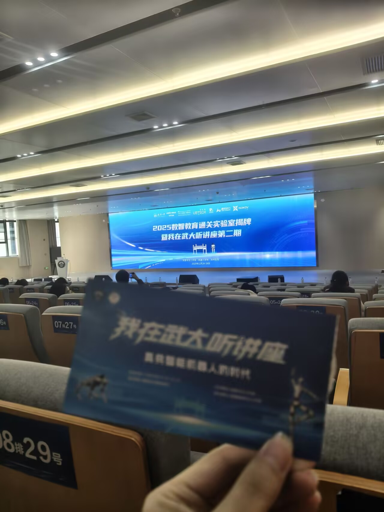
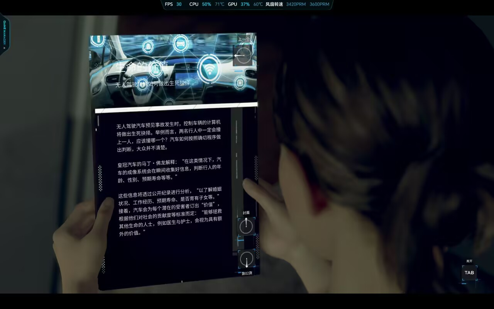
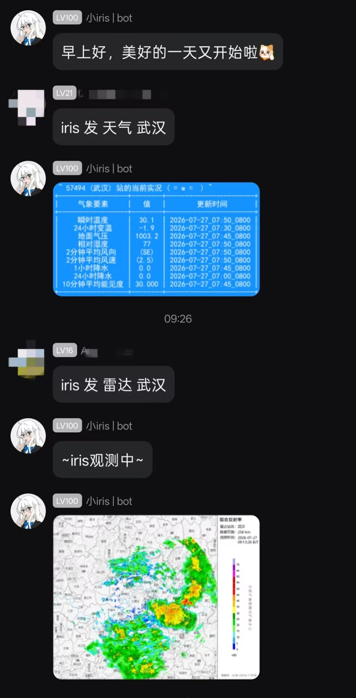
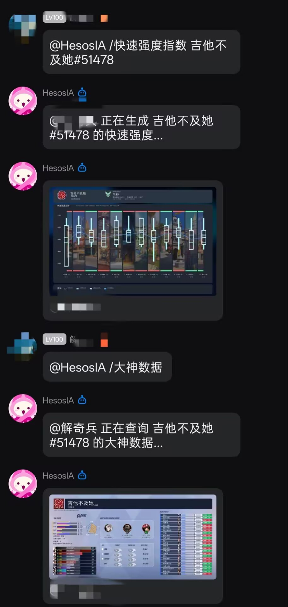

一张照片的引起的遐思
之前整理过一次手机相册，是为了剪出一个年度合集视频，所以翻的不是很仔细，暑假闲暇之时又了捡起来，突然发现了一个记忆锚点。

这是“我在武大听讲座”的现场，这个系列每年都会有一场大型的讲座，邀请知名人士参加，所以讲座门票是一票难求。这次宇树科技王兴兴的讲座，在武大的选票系统里我其实是没有抽中的，但是很巧，当时无意填了一份海报中的互动问题收集问卷，竟然被选中了。

到现场，发现自己只是互动的内应之一罢了，最后也没能跟王兴兴对话。我并不是很失落，因为我其实根本就不认识王兴兴，或者说从认识到见到他本人不到三天。讲座宣传时周围同学都说背过他的作文素材呢，但我真的闻所未闻，也算是信息茧房在我身上的一种体现吧，哈哈。讲座的内容我已记不太清了，印象中除了对公司产品研究的介绍，其余就是很常见的励志话。
“所以在未来，具身智能真的会实现吗？”当时写下问卷的我曾这样在心里问过，我认为：“会，但是太遥远“。什么是“具身智能”，我专门搜过：具身智能（Embodied Intelligence）是人工智能与机器人学交叉的前沿领域，强调智能体通过身体与环境的动态交互实现自主学习和进化，其核心在于将感知、行动与认知深度融合。 简单来说就是给AI一个物理身体，让它通过传感器感知真实世界，能自主行动，而传统的大模型则被称为“离身智能”，只存在于服务器，处理文字图片等信息，无法改造现实世界。
具身智能绝对是未来核心科技主线之一，是公认的必然发展方向。未来，机器人能走进社会的方方面面，用于高危特种作业、家庭服务、科研探索等等，这种愿景在众多影视文化作品中可窥一二，但主题大多数是讨论机器人伦理的哲学命题，《机械公敌》就是一部比较经典的电影，我也是从这部电影中了解到著名机器人三定律，它由科幻作家阿西莫夫创建，但它不是工程规范，只是科幻设定，现实机器人行业从来没有落实这套规则，也无法去落实，现代机器人安全方案更多依靠硬件限位、场景隔离，因为三定律所说的内置通用道德逻辑是难以量化的，比如今年3月份我玩过一款交互式电影游戏《底特律：化身为人》（无论是画面上还是体验感都特别惊艳，很难想象它是2018年上架的），主题是仿生人，也和机器人差不多，，游戏中有很多细节，其中一个场景就提到了这个道德价值问题。

这篇“生命的价值——无人驾驶汽车如何做出生死抉择”就提出来了一个量化问题，这和电车难题比较相似，很有意思，相关全文的内容如下：
无人驾驶汽车预见事故发生时，控制车辆的计算机将做出生死抉择。举例而言，两名行人中一定会撞上一人，应该撞哪一个？汽车如何按照确切程序做出判断，大众并不清楚。
皇冠汽车的马丁·佛龙解释：“在这类情况下，汽车的成像系统会在瞬间收集好信息，判断行人的年龄、性别、预期寿命等等。”这些信息将透过公开纪录进行分析，“以了解婚姻状况、工作经历、预期寿命、是否育有子女。接着，汽车会为每个潜在的受害者订出‘价值’，根据他们对社会的贡献度等标准而定；‘能够拯救其他生命的人士，例如医生与护士，会视为具有额外的价值。’”
然而这套系统引发许多道德争议。倘若人人生命价值相同，凭什么有人的性命比别人重要？批评人士认为，任何程序都不该拥有决定谁生谁死的权力。如果汽车偏向保护人类中的特定群体，等于宣扬一种歧视，社会大众绝对无法接受。马丁·佛龙承认争议存在，但他认为人类必须接受现实：“我们无法兼顾所有人，有时只能选择损失最小的方案。生命本就不平等，我们必须坦然面对。”
随着自主交通工具普及，这个难题只会越来越常出现。人类必须尽快达成共识：我们究竟愿意赋予人工智能多大权力，让它决定谁能活下去。
好了，回到问题本身，为什么我觉得很遥远？目前市面上大多数具身智能存在很多瓶颈，泛化能力不足，仿真现实鸿沟，难以理解因果，实时控制难度大，硬件成本高……，讲座中王兴兴提到的灵巧手就是其中一个难题，不知道在我的生之年这些问题是否能全部解决。
我无法畅想未来的样子，30年前，你如果问当时的人，现在的世界会是什么样子？他会告诉你汽车在天上飞，可是30年过去了，我没有见到满天飞的汽车，但是信息科学却有了长足的进步，我相信，互联网产生的作用远比会飞的汽车大得多。现在大家都说我们已经进入“第四次工业革命”了，也就是智能时代，我的高中物理老师有一次也在课上对此发表观点，他认为，能源没有发展起来，什么工业革命都是空话（想必你已经猜出来我们当时正在上原子物理），如果能实现可控核聚变，这种终极清洁能源将解决全球能源的底层矛盾，所带来的影响是“文明级”的。他说的很有道理，不过等到可控核聚变落地成熟，更是遥不可及了，所以，在这个所谓的“智能时代“里，我还是乐观又悲观地期待一下具身智能吧。
宇树的产品主要是人形机器人，现在也是热门方向。人形是最通用的，所用的东西都是以人的形态来做适配的，什么样形态的机器人可以同时帮你炒菜、扫地、推轮椅、开车？答案只有人形，这也是泛化能力为什么重要的原因。人形机器人确实有巨大的潜力，若能大规模普及，会极大改变人们的生活方式。但是我认为传统的大模型，也就是离身智能，仍然会有很深刻的影响。那种万物互联，点击墙壁就能调出屏幕的科幻场景，应该会先一步出现。与之相对应的是超级终端，就我所看过的，《灵笼》漫画里管理着整个久川市的超人工智能ASH，城市就像它的身体一样，感知着发生的一切，从而能实时控制与调度，还有《流浪地球》中的MOSS、《机械公敌》中的智脑等等，我还是比较向往的。
就当下而言，虽然不能点点墙壁就控制一切，但我们还是能点点屏幕控制手机的。之前厂商推出一款豆包手机，它能完全操控你的设备，一句语音就能实现定制需求、跨平台比价、点单、接听电话的一系列操作，我看了个测评视频，甚至有点想买的冲动，但是后来被封了，因为生态的原因，懂得都懂。自动化控制手机这个想法目前不能落地（其实是刚落地还没发展就被封杀了），那自动化控制APP总行吧。所以我觉得服务器的虚拟机器人或许会成为新的风向，和以往的那种像客服的机器人不同，有了LLM的加持，他们能做的事情会更多。现在，用AI解决生活和工作上的问题，绝大多数人都局限在手机APP或者网页版对话框，面向复制与粘贴。就在去年，出现了在命令行里跑AI的潮流，AI早已与代码工程项目深度融合，并且表现得十分亮眼，大概，在生活中的渗透也将会迎来一个新的台阶吧，在我身边就有些例子。


武汉大学大多数课程群或者通知群都在QQ，水群的时候我便发现这些自动化的机器人，QQbot目前还只是@它后才能做出反应，但我也看见有的会自主发消息并且还能个性化回答问题，网上也有各种蒸馏离职同事聊天记录做成AI助理的。几乎每个人都有微信或者QQ，互联网发展最大的成就之一便是这些即时通讯软件的广泛应用，所以，最先渗透的也可能就是这些国民级应用平台。
刚上大学不久，腾讯就上线了一个元宝总结聊天记录的功能，虽然有点拉胯，但是还是提供了一些方便的，在那时我有一个很可怕的想法（现在看来好蠢），如果盗号的人利用这个，把号主的聊天信息进行一个总结分析，做一个用户画像，趁着合适的时机，对其自身或者好友进行精准诈骗，那也太防不胜防了吧。后来才知道，平台不给接口，这种数据爬取是很难的，比如微信就很严。不过，QQ现在正在测试性地开放API，上线了QQclaw，能给开发者更大的空间。
为了给这篇文章结个尾，生硬地来个首尾呼应吧，张校长和王兴兴的揭牌合照：